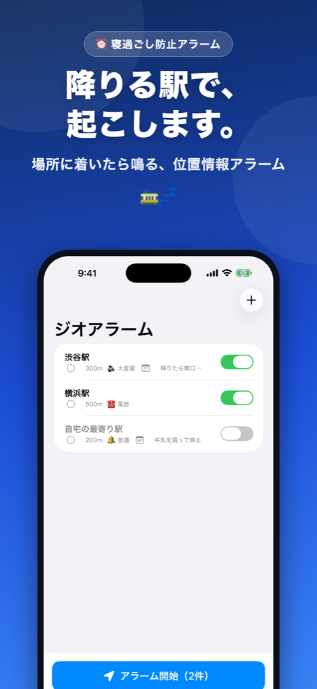
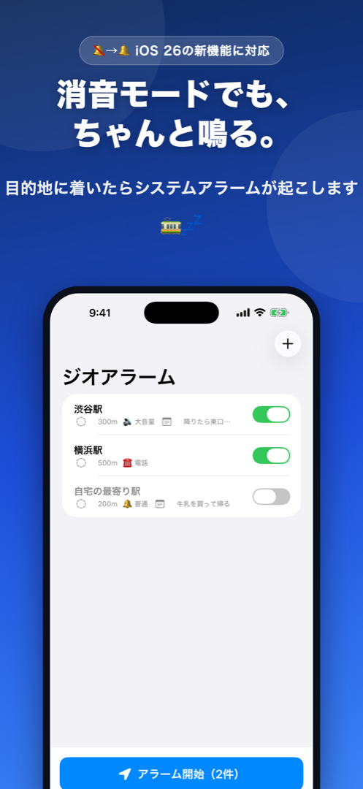

⏰ 寝過ごし防止アラーム
降りる駅で、
起こします。
目的地に近づくと自動で鳴る、位置情報アラーム
App Storeで無料ダウンロード iPhone対応 / 基本無料駅・バス停・どこでもOK。設定した場所に近づくと自動でアラームが鳴ります。時間ではなく「場所」で起こすから、遅延にも強い。
iOS 26以降はシステムアラーム対応。サイレントスイッチON・集中モード中でも、しっかり起こします。
バックグラウンドでもロック中でも動作。うたた寝しても、降りる駅でちゃんと鳴ります。
大音量・電話ベル・地震アラート風など6種類。バイブのみのマナーモードにも対応しています。

